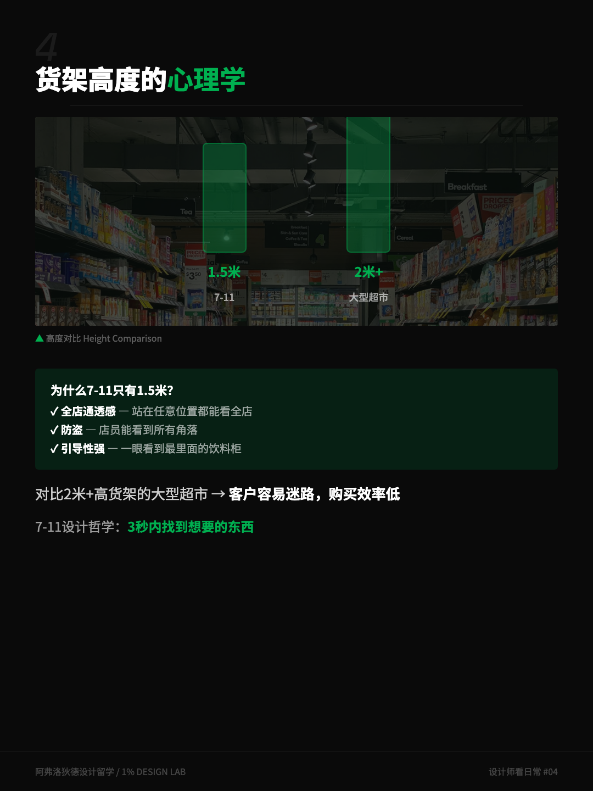
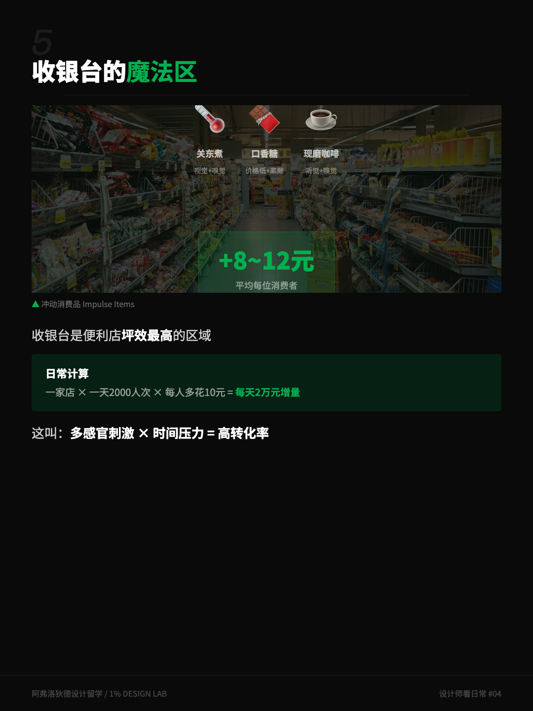

我家楼下有家 7-11，小到站在门口就能看见最里面的冰柜。有天晚上我下去买瓶水，就买一瓶水。走到店最里头拿到瓶子，顺着货架往回收银，前后不到四分钟。出来时手里多了一个饭团、一包薯片，还有一杯现磨咖啡。明明是去买水的，水反倒像顺手捎的。
这种事发生得多了，我把怀疑对象从自己换成了这家店。三十来平米，三千多种商品，一个只想买水的人走进去，每一步都踩在别人画好的线上。
写公众号或者小红书，这种选题很容易滑成「便利店设计有多变态」。这次我想换个写法，先查数据，再拆设计。网上流传的那几组数字，我当作悬案重新翻了一遍，翻出来的东西有点意思。
动笔前我把关键词丢进 Google Trends，先听搜索记录的口供。美国区「7-eleven」的搜索热度近三个月涨了接近一倍，涨得蹊跷。点开蹿升最快的关联词，全是「7-eleven location downsizing」「north america store closures」。北美人在搜它关店。同一时间的日本，母公司宣布从 2026 年起投入 3000 亿日元，改装 5000 家门店，重点动作之一是延长收银台。
同一家公司，一边在收缩，一边在砸钱，这个对比就是这篇文章的起点。7-11 在北美学的是大而全的加油站模式，在日本打磨的是小而精的微空间。北美的店在关，日本的店在改，改造的钱大部分花在你脚下那条看不见的路线上。
今天拆的就是这套 30㎡ 的动线设计。四个机制，一个一个来。
一、逆时针动线，一间为右撇子设计的店
7-11 的经典布局是逆时针动线。入口在左侧，收银台在右侧出口，你进门后自然向右绕一圈，最后停在收银台前，绕成一个闭环。
为什么是逆时针？流传最广的解释抓的是右撇子。右撇子进门习惯向右转，逆时针行走时右手始终朝着货架，拿东西顺手，停留和触摸的概率就高。
这个方向本身有据可查。零售研究者 Paco Underhill 在《Why We Buy》里记录过大量门店观察，发现顾客进门后普遍向右，他管这叫「不变向右」（invariant right）。他的咨询公司 Envirosell 几十年来就在实体店里干这个，架摄像机，数人怎么走。
核查一下。中文互联网讲这招，常配一句「购买概率提升 15%」。数字精确到个位数，我起了疑，专门去找它的一手出处，一路找下去没摸到。方向有 Underhill 的观察撑着，精确到 15% 的说法，更像传播过程中长出来的。信方向，别信数字。

你下次可以留意一个细节，并不是每家便利店都这么摆。一些后开的、店型不规整的门店，入口和收银的位置是妥协过的。在那样的店里，你找水的路线明显更绕。动线先歪了，货架摆得再满也补不回来。
二、黄金三角，三个点圈住你的必经之路
日本便利店行业有个经典布局理论，叫「黄金三角」。三个顶点分别是入口、饮料冰柜、收银台。
入口给你看当季新品和促销；饮料冰柜通常放在离入口最远的位置，水和咖啡是便利店里最高频的需求，把高频品放到最深处，等于强制每个人把整条货架走廊走完；最后是收银台，等你掏出手机准备付钱，关东煮和现磨咖啡正好出现在视线里。
三个点连成的三角形，就是全店曝光最高的走廊。你在里面「顺便看到」的每一件商品，都不算顺便。
这件事宜家用一万平米干过一次，整层楼的迷宫动线，让你路过的样板间最大化。7-11 是同一套逻辑的微缩版，一个用一万平米，一个用 30 平米，干的都是把路过变成生意。区别在于宜家要你逛得久，便利店要你走得快、买得多。

三、1.5 米货架，让你三秒看清全店
7-11 的货架通常不超过 1.5 米。这是刻意选的高度。
低货架带来三件事。第一是通透，站在店里任何位置都能看到对面墙，空间安全感是实打实的体验差异。第二，店员的视线能覆盖全店，防盗成本随之下降。第三最有意思，你一进门就能看见最里面的饮料冰柜，那个「看得见的目标」会把你往店铺深处拉。
对比一下大卖场。二米以上的高货架把人裹进货架峡谷，找一样东西全靠头顶指示牌，逛二十分钟找不到出口是常态。那是另一种设计哲学，用迷失换停留。便利店反过来，它赌你的时间敏感，让你三秒内定位目标，用顺手换加购。
毕马威和连锁经营协会的《2026 中国便利店发展报告》给了一个行业注脚，便利店的增长逻辑正在从「多开门店」切换到「深耕单客」。翻译一下，新店不多了，每一家存量店的每平米效率都要抠。动线就是那把抠效率的刀。

四、收银台前的十秒钟，坪效最高的角落
最后说收银台，便利店坪效最高的区域，也是这次日本改装计划里明确要延长的地方。
注意看收银台周围摆了什么。关东煮和包子，热气顶着你的脸，是嗅觉；口香糖和小零食，正好在你掏手机的视线高度，触手可及；咖啡机在旁边磨豆，听觉和嗅觉一起上。你排队的那十秒钟，至少被三种感官轮番打过招呼。
这些商品有个统称，冲动消费品。它们不需要你产生需求，只需要在你防线最低的时刻出现在你手边。那种时刻很好认，排队，无聊，钱包已经打开了。
再核查一下。「平均每个人在收银台多花 8-12 元」，这个数字在小红书和公众号里流传极广。我又去翻了一遍，还是没摸到一手出处。收银区冲动购买是便利店行业公认的利润结构，这个方向我认；具体到 8-12 元，大概率又是传播中固化的数字。比数字更硬的证据是行为，一家公司愿意花 3000 亿日元改装门店，收银台是重点改造对象。用真金白银投出来的判断，比转发的数字可信。

五、把 30㎡ 搬回屏幕上
我是做数字产品的，看这些东西总忍不住对号入座。便利店的四个机制，在产品里全有对应物。
- 逆时针动线 → 信息架构。用户从哪进、先看到什么、在哪里离开，路径是被设计出来的，不存在自然形成这回事。
- 黄金三角 → 首屏与高频功能。把高频功能放到路径最深处，逼用户穿越你的核心价值区，很多产品的新手引导就是这么设计的。
- 1.5 米货架 → 界面信息密度。低货架换通透，界面也一样，留白换来的是用户三秒定位目标。
- 收银台魔法区 → 结账页加购。下单前的推荐位放什么、不放什么，就是你的关东煮摆位。
要说伦理，这套手法本身没有善恶。赌场那篇里我写过，刀握在厨师手里是做菜，握在贼手里是作案。我更欣赏日式便利店的地方在于，它的版本相对诚实，它只是把商品摆在你会经过的路上，标好价格，买不买，最终仍然是你说了算。比起赌场拔掉时钟、快餐店把椅子做得坐不久，这已经算空间设计里体面的那一档了。
明天进便利店，给自己四个观察动作
- 进门先找收银台。它在你右手边吗？入口和收银是不是把店围成了一个圈？
- 目测货架高度。能不能一眼看到对面的墙？再找出被高货架挡住的峡谷区。
- 看收银台侧面。关东煮、咖啡机、口香糖各占什么位置？哪一样正对着你排队的视线？
- 反着走一次。故意顺时针逛完，试试是不是真没那么顺手。这点别扭的来源，就是设计。
四个动作做完，你在任何零售空间里都会开始看见那条看不见的路线。这也是我开「设计师看日常」这个系列的原因。
- 「购买概率提升 15%」「收银台多花 8-12 元」两组数字，我未能追溯到一手出处，已在正文中如实标注存疑。方向性结论（右转倾向、收银区冲动购买）分别有 Paco Underhill《Why We Buy》的门店观察与便利店行业共识支撑。
- 7-11 日本母公司 2026 年起投入约 3000 亿日元改装约 5000 家门店、延长收银台的表述，来自广告门 2026 年报道
- 行业背景参考了毕马威与中国连锁经营协会《2026 中国便利店发展报告》中「从多开门店转向深耕单客」的趋势表述
- Google Trends 数据为作者 2026 年 8 月自查。美国区「7-eleven」近三个月搜索热度明显上升，上升最快的关联词集中于「store closures」「location downsizing」等关店话题。
- 文中图卡为「设计师看日常」系列自制信息图。本文不构成任何投资或经营建议，只是借一间 30 平米的店，把动线设计这件事拆开来看。